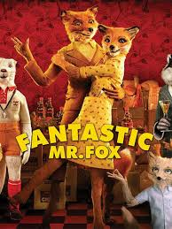
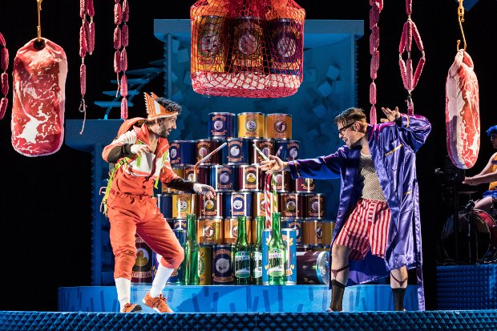
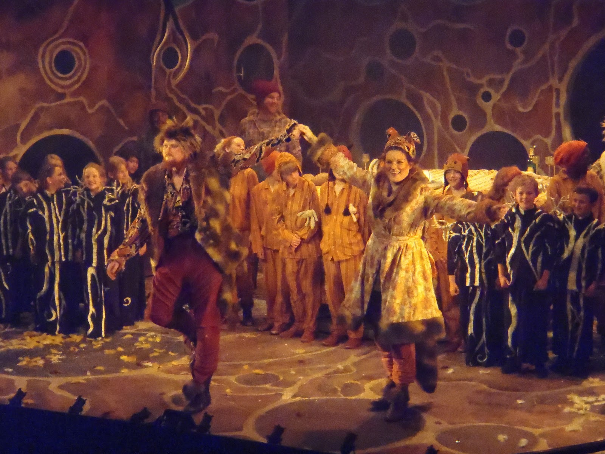

Fantastic Mr Fox is a children's novel written by British author Roald Dahl. It was published in 1970, by George Allen & Unwin in the UK and Alfred A. Knopf in the U.S., with illustrations by Donald Chaffin. The first U.K. Puffin paperback, first issued in 1974, featured illustrations by Jill Bennett. Later editions have featured illustrations by Tony Ross (1988) and Quentin Blake (1996). The story is about Mr. Fox and how he outwits his farmer neighbours to steal their food from right under their noses. In 2009, it was adapted into a stop-motion animated film by Wes Anderson. Two audio readings were released, one with the author narrating (ISBN 0-060-53627-6) and another with Martin Jarvis narrating (ISBN 0-141-80787-3).
Mr. Fox is an anthropomorphic, tricky, and clever fox who lives underground beside a tree with his wife and four children. In order to feed his family, he makes nightly visits to farms owned by three wicked, rude, cruel and dim-witted farmers named Boggis, Bunce and Bean, whereupon he seizes the livestock available on each man's farm. Tired of being outsmarted by Mr. Fox, the triumvirate devise a plan to ambush him as he leaves his burrow, but they succeed only in shooting off his tail.
The three then dig up the Foxes' burrow using spades and then excavators. The Foxes manage to escape by burrowing further beneath the ground to safety. The trio are ridiculed for their persistence, but they refuse to give up and vow not to return to their farms until they have caught Mr. Fox. They then choose to lay siege to the fox, surrounding Mr. Fox's hole and waiting until he is hungry enough to come out. Cornered by their enemies, Mr. Fox and his family, and all the other underground creatures that live around the hill, begin to starve.
After three days trapped underground, Mr. Fox devises a plot to acquire food. Working from his memory of the routes he has taken above ground, he and his children tunnel through the ground and wind up burrowing to one of Boggis' four chicken houses. Mr. Fox kills several chickens and sends his eldest son to carry the animals back home to Mrs. Fox. On the way to their next destination, Mr. Fox runs into his friend Badger and asks him to accompany him on his mission, as well as to extend an invitation to the feast to the other burrowing animals - Badger and his family, as well as the Moles, the Rabbits and the Weasels - to apologize for getting them caught up in the farmers' hunt. Aided by Badger, the animals tunnel to Bunce's storehouse for ducks, geese, hams, bacon and carrots (as noted by one of the Small Foxes, the Rabbits will require vegetables) and then to Bean's secret cider cellar. Here, they are nearly caught by the Beans' servant Mabel, and have an unpleasant confrontation with the cellar's resident, Rat. They carry their loot back home, where Mrs. Fox has prepared a great celebratory banquet for the starving underground animals and their families.
At the table, Mr. Fox invites everyone to live in a secret underground neighbourhood with him and his family, where he will hunt for them daily and where none of them will need to worry about the farmers any more. Everyone joyfully cheers for this idea, while Boggis, Bunce, and Bean are left waiting in vain for the fox to emerge from his hole. The book ends with the words "And so far as I know, they are still waiting."
In 1994, Fantastic Mr Fox was awarded the Read Aloud BILBY Award from the Children's Book Council of Australia.[1]
The book was adapted into a stop-motion animated film by director Wes Anderson. It was released in 2009 and features the voices of George Clooney as Mr. Fox, Meryl Streep as Mrs. Fox, Bill Murray as Badger, Robert Hurlstone as Boggis, Hugo Guinness as Bunce and Michael Gambon as Bean. The movie's plot focuses more on Mr. Fox's relationship to Mrs. Fox and his son, which is pitted against Mr. Fox's desire to steal chickens as a means of feeling like his natural self. The movie adds scenes before Mr. Fox attacks the three farmers and after their bulldozing of the hill, as well as a slightly altered ending and more background on Mr. Fox's past life as a thief of food. The Foxes' four children are replaced by Ash, a small and insecure fox who seeks his father's approval and Mr. Fox's nephew Kristofferson, who excels in athletics and is a source of jealousy for Ash.
The book was adapted into a play of the same name by David Wood and was first performed at the Belgrade Theatre in Coventry in 2001. The play is licensed (in the U.K. only) through Casarotto Ramsay Ltd. for repertory performances and Samuel French Ltd. for amateur performances.[2 A musical adaptation of the book ran at the Nuffield Theatre in Southampton during Christmas 2016 before touring the U.K. in early 2017.[3][4]]
Tobias Picker adapted the book into an opera which had its world premiere at the Los Angeles Opera performing 9–22 December in 1998.[5][6] the Opera starred Gerald Finley as Mr Fox and Suzanna Guzman as Mrs Fox.[5] A specially commissioned new version of this opera by Opera Holland Park was performed in the gardens and natural scenery of Holland Park in the summer of 2010 staged by Stephen Barlow. This version starred Grant Doyle as Mr. Fox, Olivia Ray as Mrs. Fox, Henry Grant Kerswell, Peter Kent and John Lofthouse as Farmers Boggis, Bunce and Bean.[7]
